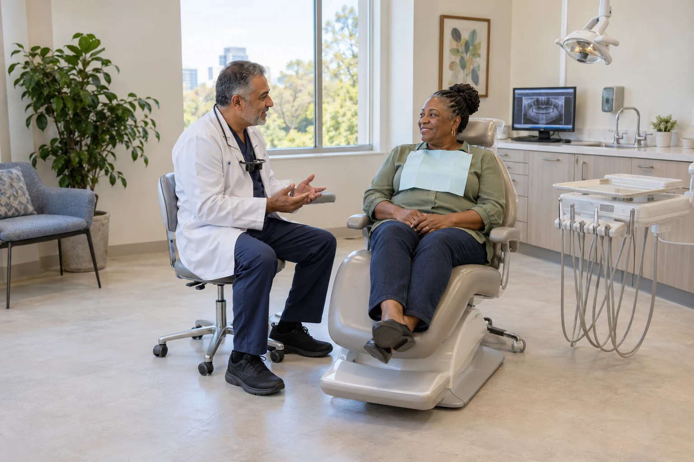

DENTISTS
SEO + AEO to bring your dental practice leads for the services you offer.
DENTISTS AND ONLINE DISCOVERY
StartWeb7 builds websites and provides SEO + AEO management for dental practices. People can discover your office through Google and AI answers, explore your dental services and contact the practice about an appointment. Your website should represent the dentistry you provide, the team behind it and the experience of visiting your office.
Present the dentistry your practice provides
Routine dental care, implant appointments, cosmetic services and orthodontic treatment involve different reasons for contacting a practice. A website can give each offered service an informative introduction, using descriptions approved by your team. That helps visitors explore the work without guessing from a general statement about dental care.
The service mix also shapes the practice’s identity. A family dental office may emphasize ongoing relationships and care across age groups, while a specialist may focus on a narrower area of dentistry. The site should fit that identity and make the available services easy to recognize, rather than presenting every dental office as the same business.
Help people picture the office
Choosing a dental practice can involve the location, the people and the atmosphere as well as the service. Office photography and team introductions give prospective patients a view of where they will go and whom they may meet. That information helps turn an unfamiliar practice name into a recognizable place.
Dentist profiles can explain professional background and service focus, while staff introductions add context about the team supporting the visit. For practices with several offices, location information can show the appropriate contact and appointment route for each one. A consistent presentation keeps the wider practice connected without making its locations difficult to distinguish.
Make the appointment route clear
Someone considering an implant appointment may need a different first conversation from a person arranging a routine new-patient visit. Clear service information gives them context for contacting the office. The website can then direct them to the phone number or appointment system your practice uses.
Your team can decide which administrative details belong online, such as accepted payment arrangements or the process for becoming a new patient. Presenting current information in the right place helps visitors prepare for the call. The goal is a useful introduction that brings leads to the office through the channels you already operate.
SEO for dental services and local discovery
Dental searches often combine the service with a location. Someone may look for a family dentist nearby or compare practices that offer the treatment they are considering. SEO supports the office’s presence in relevant Google results, connecting those searches with your website.
The site gives people room to explore the dentistry, provider and office details behind that result. A clear presentation can also help a referred patient who searches for the practice by name before calling. Search visibility and a useful website work together around the services your office wants people to discover.
AEO for people comparing dental options
AI tools give people another place to explore dental services and providers. A reader may compare the purpose of different services before deciding which practice to contact. AEO supports your business’s presence in relevant answers, with the website providing the more complete practice introduction.
The distinction between business information and individual care stays clear. The site can describe the services your dentists offer while leaving treatment suitability to the appointment. StartWeb7’s role is to present the practice and support discovery, using the information your team supplies about its dentistry and appointment arrangements.
A website that grows with the practice
Dental practices may add providers, update office photography or introduce a service already supported by their team. The website can reflect those changes so new visitors encounter the current practice. Clear information remains useful whether someone arrives through a search, a referral or an AI answer.
StartWeb7 offers website design and ongoing SEO + AEO management for dental offices. Discuss your services, locations and existing website to identify the work your practice needs. The available website options and Instant Audit give you a place to begin that conversation.